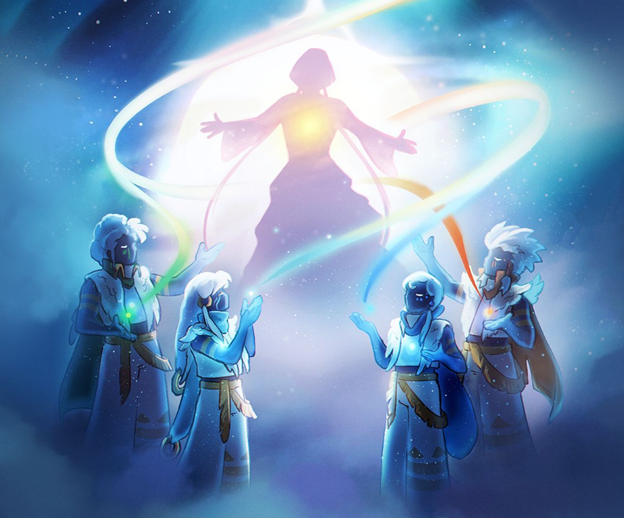

Description
Welcome to the enchanting world of Sky, a pleasant puzzle-adventure game. Hand in hand, take flight through the beautifully-animated kingdom across seven realms and create enriching memories with other players. Spread Light through the desolate kingdom and return the fallen Stars to their constellations.
If you have played any of thatgamecompany's (TGC) previous games, you will be familiar with the soothingly quiet and simple game style, with beautiful music and equally breathtaking graphics. The minimalistic controls allow you to go with the flow of the game, finding the story within your surroundings, maybe even meeting other real-time players and communicating with chirps and Expressions. A nice, pleasant, and simple adventure-based game. Sure there are some sorts of danger at times, but for the most part, no enemies, no blood, no battle, all in all, no violence. It's a game to sit back, relax, and enjoy playing.
Experience
In the kingdom of Sky, you will experience:
Spirits: Relive spirits' memories throughout the land and return them to their realms' temples to be rewarded with their unique expressions and see the items they offer you in their constellations.
Expressions: Learn expressions from spirits and use them to communicate with others. Upgrade these expressions to unlock more creative and elaborate animations.

Friendship and Forging Candles: Make friends with players around the globe! Collect light to forge candles (Sky's in game currency), offer them to upgrade your friendship to unlock special expressions to share between one another, and use them to send the gift of a heart to strengthen your connections with others.
Cosmetics: Grow your friendship with the spirits you’ve encountered and offer them candles and hearts to be rewarded with items to enhance your appearance.
Explore the Skies: Collect scattered Children of Light throughout every Sky Realm to increase your cape power and soar to greater heights! Dive into the clouds to instantly recharge your cape. Interacting with others will also restore your energy.
Daily Quests: Complete daily quests to receive up to four candles per day. Candles are used to upgrade friendships and abilities with spirits and other players.
Seasons and Events: Celebrate new spirits and special occasions with other players! Adventure seasons bring unique spirits, expressions, and collectibles to reflect the world of Sky, and special events offer an assortment of playful and colorful items to revel in the festive mood.
Traveling Spirits: Past adventure seasons do not repeat, but the spirits and their unique cosmetics will return for a limited duration in case you missed them during their initial debut.
Graphics: Enjoy stunning graphics at your fingertips. Sky supports several graphics settings to suit your preferences whether you play in docked mode (TV mode) or handheld mode.
Season of Aurora
This season was the second collaborative season released by thatgamecompany, collaborating with AURORA. Each Spirit brought a story written by AURORA, told through her voice in Seasonal Quests to weave the imagination of her best-known songs into the events that once unfolded in the realms. Complete the Seasonal Quests to reveal the colors and elements waiting to be restored and awaken a spirit of Light from the world's distant past.
The AURORA Concert (also referred to as The Musical Voyage) is a special event that first occurred on December 8 at 20:30 PST (UTC-8) and lasted approximately 50 minutes. For the first time ever in gaming history, Sky delivered a musical journey where players can feel the wave of emotions from thousands of other players on the same screen, at the same time. This hour long virtual concert premieres 'Exhal, Inhale', 'Runaway', 'All is Soft Inside', 'Warrior', 'The Seed', 'Through the Eyes of a Child', and 'Queendom'. Players had the ability to chat with players in the same group or row and new expression emojis were available at the bottom of the screen for the duration of the event: Waving Light, Heart, Shock, and Cry expressions.
After the concert, all pre-concert activities are still available to players, with the exception that the Bonfires and Campfire Snack Kits are missing. On top of these, players can also find AURORA inside the sound bath after the concert. AURORA is seen in the form of sparkles, idly standing and swinging her arms. She will offer a hug when a player approach her, and speaks after the hug: "Thank you so much for the love! You are so beautiful. And remember to give some of that love to yourself too."